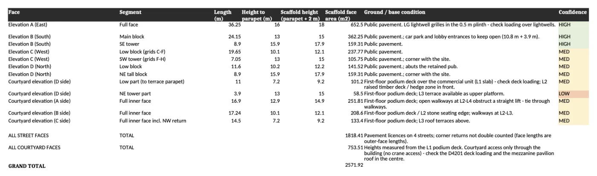

Przedmiary robót i kosztorysy ofertowe dla wykonawców
Kosztorysowanie dla wykonawców · Polska · Wielka Brytania · Australia
Przedmiary robót i kosztorysy ofertowe dla wykonawców
Prześlij dokumentację przetargową. Otrzymasz przedmiar robót lub kosztorys ofertowy w formacie, którego wymaga zamawiający, gotowy do złożenia przed terminem.
20 lat przedmiarów i kosztorysów w Polsce, Wielkiej Brytanii i Australii.
Przedmiary według KNR/KNNR, NRM2, SMM7 lub AS 4000, zależnie od tego, w jakiej podstawie napisany jest kosztorys.
Generalny wykonawca · pełny przedmiar
Budynek mieszkalny, Londyn
Kompletny przedmiar do oferty generalnego wykonawcy: 32 kosztorysy branżowe z jednego kompletu rysunków, wydane w formacie działu ofertowego wraz z rejestrem pytań.
Kosztorysy wydane w dwa tygodnie.
Remediacja elewacji · Gateway 2
Pakiet 15 mln GBP, Birmingham
Zakres i koszt z raportu FRAEW i inwentaryzacji, z dostępem i etapowaniem do wniosku Gateway 2 (brytyjski nadzór budowlany dla budynków wysokiego ryzyka).
Sucha zabudowa i wylewki
Pakiet 7 mln GBP, wieżowiec mieszkalny, centrum Londynu
Ściany działowe, okładziny i sufity według typów przegród z rzutów; wylewki według stref. Przedmiar w formacie podwykonawcy.
Konstrukcja · Australia
Projekt dla resortu obrony, 26 mln AUD, dziewięć budynków
Deskowanie, zbrojenie i beton według elementów z projektu konstrukcji, wycenione w formacie zestawienia wykonawcy.
Nazwy klientów na życzenie. Większość naszych zleceń to wsparcie ofertowe, poufne do rozstrzygnięcia przetargu.
Co liczymy i wyceniamy
Przedmiar (ilości robót z dokumentacji projektowej, przed budową) i kosztorys (ilości pomnożone przez ceny). Dla generalnych wykonawców, podwykonawców i inwestorów.
| Usługa | Co otrzymujesz | Podstawa i format |
|---|---|---|
| Przedmiar robót | Ilości według elementów, kondygnacji i budynków z rysunków 2D, plików DWG lub modeli IFC. Z wykazem założeń. | KNR/KNNR · Norma PRO · Zuzia · Excel |
| Kosztorys ofertowy | Kosztorys z narzutami, zestawieniem RMS i tabelą elementów scalonych. Sprawdzony ze specyfikacją (STWiORB) przed złożeniem oferty. | Ceny wykonawcy lub Sekocenbud |
| Kosztorys inwestorski | Wartość zamówienia dla zamawiającego publicznego zgodnie z rozporządzeniem, z przedmiarem i założeniami wyjściowymi. | PZP · rozporządzenie w sprawie kosztorysu inwestorskiego |
| Hale stalowe i konstrukcje prefabrykowane | Przedmiar i wycena konstrukcji, obudowy, posadzek i instalacji dla producentów hal. Model parametryczny do szybkiej wyceny. | KNR · własne normatywy producenta |
| Pakiety branżowe (UK i Australia) | Elewacje, sucha zabudowa, zabezpieczenia ogniowe, konstrukcje. Dla polskich firm, które składają oferty za granicą. | NRM2 · AS 4000 |
Jak to działa
Prześlij dokumentację
Rysunki, specyfikację techniczną, przedmiar zamawiającego, jeśli jest, oraz termin składania ofert.
W ciągu jednego dnia roboczego potwierdzamy zakres, stałą cenę i termin
Dostajesz opis zakresu, który zmierzymy, cenę i datę wydania.
Otrzymujesz przedmiar lub kosztorys w swoim formacie
Z wykazem założeń.
Wycena za pakiet, uzgodniona przed rozpoczęciem pracy. Bez rozliczeń godzinowych i bez opłat za zakres, którego nie uzgodniliśmy.
Jak wygląda to, co dostajesz

Kosztorys branżowy w formacie raportu wykonawcy: pozycja, opis, ilość.

Zestawienie płaszczyzn rusztowań do oferty remediacji elewacji: długości, wysokości, powierzchnie i uwagi o dostępie dla każdej elewacji.
Kto wykonuje pracę
Robert Kowalski. Dwadzieścia lat przedmiarów i kosztorysów w Polsce, Wielkiej Brytanii i Australii. Elewacje i ich remediacja, sucha zabudowa i wylewki, zabezpieczenia ogniowe, konstrukcje i roboty murowe.
Kontaktujesz się bezpośrednio ze mną. Osoba, która mierzy Twoje rysunki, odbiera telefon, gdy kierownik kontraktu pyta o cenę jednostkową. Nie zlecam przedmiarów podwykonawcom i nie prowadzę więcej ofert naraz, niż jestem w stanie rzetelnie obsłużyć. Tam, gdzie oprogramowanie przyspiesza pomiar, mówię o tym wprost, a każda ilość, która stąd wychodzi, jest sprawdzona ręcznie z rysunkami.
Co nam przesłać
Projekt (PDF lub DWG), specyfikację techniczną, przedmiar zamawiającego, jeśli jest, oraz termin składania ofert. Model IFC, jeśli istnieje; nie jest wymagany.
Załącz do 20 MB przez formularz. Przy większej paczce napisz do nas, a wyślemy link do przesłania plików.
Co dzieje się dalej
W ciągu jednego dnia roboczego potwierdzamy zakres, stałą cenę i termin.
Jeśli to nie jest zlecenie, które wykonamy dobrze, mówimy o tym wprost i wskazujemy, kto je wykona.
Najczęściej zadawane pytania
P: Czego potrzebujecie, żeby zacząć?
O: Rysunków w PDF lub DWG, specyfikacji technicznej (STWiORB), przedmiaru zamawiającego, jeśli jest, oraz terminu składania ofert. Czytamy modele IFC z Revita, ArchiCAD-a i Tekli, ale model nie jest potrzebny — większość tego, co mierzymy, pochodzi z rysunków 2D. Jeśli w postępowaniu obowiązuje wadium, podaj też termin jego wniesienia: bywa wcześniejszy niż termin składania ofert i przesuwa datę, na którą kosztorys musi być gotowy.
P: Czy mój pakiet jest za mały?
O: Nie. Większość naszych zleceń to pojedyncze pakiety branżowe.
P: W jakim formacie wraca przedmiar albo kosztorys?
O: W Twoim. Norma PRO lub Zuzia, Excel w układzie Twojego działu ofertowego albo formularz cenowy, który wydał zamawiający. Powiedz, w czym pracuje Twój kosztorysant, a w tym wydamy.
P: Ile to kosztuje?
O: Wycena za pakiet, uzgodniona przed rozpoczęciem pracy. Bez rozliczeń godzinowych i bez opłat za zakres, którego nie uzgodniliśmy.
P: Jak dokładne są ilości?
O: Ilości mierzymy z rysunków i specyfikacji, które otrzymujemy. Tam, gdzie dokumentacja jest niekompletna, wpisujemy założenie zamiast je ukrywać.
Prześlij dokumentację do najbliższego przetargu
Prześlij jeden pakiet i zobacz, co wraca. Jeśli termin składania ofert wypada w ciągu 72 godzin, zadzwoń.
Prześlij dokumentację Bezpłatny przedmiar próbny
Kontakt: info@bimtakeoff.com | +48 508 209 313